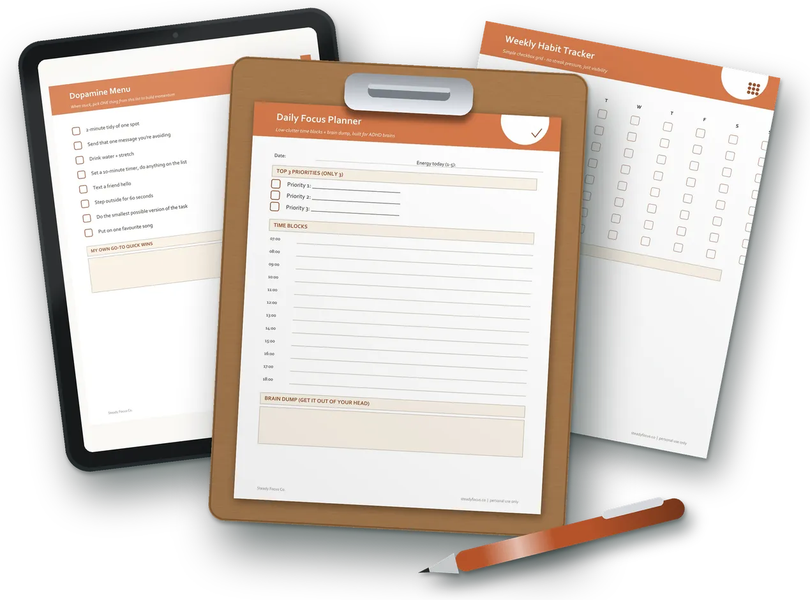
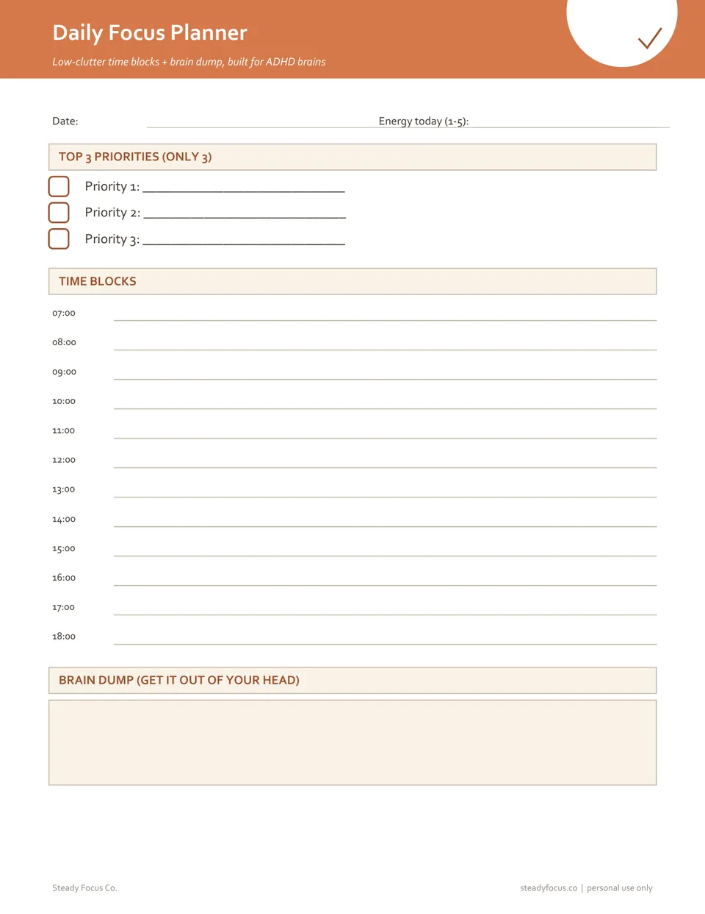
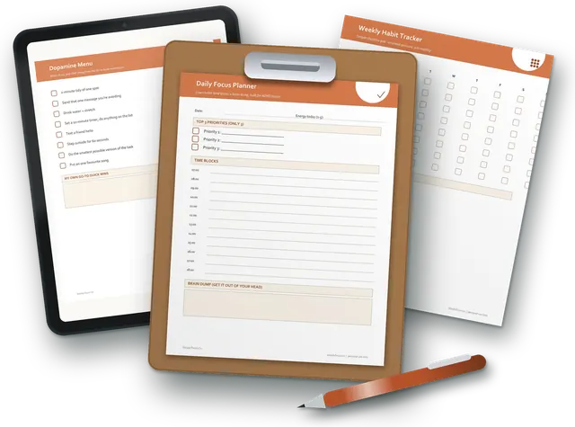

Printable ADHD planner pages · instant PDF
Your planner isn't the problem. Its size is.

Secure checkout on WhopDownload right after paying$7 once, no subscription
The ADHD Focus Bundle is 11 small printable pages. Each one does one job and stands on its own, so a missed day leaves nothing to catch up on.
Why planners end up in a drawer
We read what people wrote about planners they had paid for. The same complaint kept coming up, and it was never about willpower. It was upkeep.
If you have more than 3 things to do in one day you will easily spend about an hour making sure everything is updated in the right place.
If your planner is a lot of work to keep up with, you're probably not going to stick with it.
It actually caused me more chaos than making my life easier.
We forget what information lives where, and we update them sporadically because there's so much to keep up with.
These are public reviews and articles about other products, quoted word for word and linked so you can check them. We have no customer reviews of our own to show yet.
One big planner, or eleven loose pages
One big planner
Every page leans on the one before it. Miss Tuesday and Wednesday already starts behind. The thicker it gets, the louder the guilt.
Eleven loose pages
Nothing is linked to anything else. Skip a day and nothing waits for you. Print the page you need today and ignore the rest.
Wednesday got skipped. Thursday still starts clean.
Flip through every page
These are the real pages you download, not mock-ups. Swipe, use the arrows, or pick one from the list.

What three ADHD planners cost, next to this
One ADHD writer bought three planners and wrote up how each went. Here are the prices she paid and the snag she hit, next to ours.
- The ADHD Planner“pages and pages of work ahead”
- Legend 6 Month Daily Plannerpeople “might abandon before finishing the setup”
- Weekly Undated Planner Bookthe weekend “smooshed into one small section”
- ADHD Focus Bundle11 one-job pages. Print only the one you need.
Prices and quotes from “I tried some ADHD planners”, The Long Climb, November 2023 (source). Those were her prices then; they may have changed. $7 for 11 pages works out at about 64¢ a page.
Everything in the ADHD Focus Bundle
- 11 pages
- US Letter, prints on A4
- Black & white friendly
- One file + single pages
 Daily Focus PlannerThree priorities (only three), time blocks from 07:00 to 18:00 and a brain-dump box.
Daily Focus PlannerThree priorities (only three), time blocks from 07:00 to 18:00 and a brain-dump box.- Dopamine MenuWhen you're stuck, pick ONE thing off the list: a 2-minute tidy, a glass of water, one song.
- Weekly Habit TrackerA tick grid for the week. No streak to break, just a record of what got done.
- Morning RoutineThe same order every morning, so there are fewer choices before you're awake.
- Evening Wind-DownClothes out, bag packed, tomorrow's top three written, lights out.
- Simple Meal PlannerA meal for each day, plus a backup for when there's no effort left.
- Grocery ListSorted by aisle: produce, protein, dairy, pantry, frozen, household.
- Medication & Task TrackerTick it when it's done, so you stop wondering whether you did.
- Micro-Chore ChecklistChores cut small: clear ONE surface, start one load of laundry.
- Monthly ResetOne thing that went well, one thing to adjust. Not a report card.
- How to Print & UsePrint sizes, paper, and how to reuse a page in a plastic sleeve.
- One combined PDF of all 11 pages, plus each page as its own file
- US Letter size, prints fine on A4. Black and white is enough
- Reuse any page: slip it in a plastic sleeve and use a dry-erase pen
Secure checkout on WhopDownload right after paying$7 once, no subscription
What happens when you click
- Pay $7 on WhopOne payment on Whop’s secure checkout. No account with us.
- Your files openStraight after paying, Whop takes you to the download folder.
- Print today’s pageJust the one you need. The rest can wait in the folder.
Is this for you?
Yes, if
- You've bought planners before and stopped using them within a week or two
- You like paper and want something you can pin to the fridge
- You want a few small pages, not a whole system to learn
- You'd rather skip a day than feel behind
Probably not, if
- You keep a big detailed planner happily. Keep it
- You want reminders, alarms or syncing. That's an app's job
- You have no printer and no tablet to write on
Questions
What exactly do I get?
11 printable pages: a quick-start sheet and 10 one-job pages. You get them as one combined PDF and as separate files, so you can print the whole set or just one page.
How do I get the files?
Checkout is on Whop. As soon as you've paid, you're taken to your download folder. Nothing is posted to you.
Is it a subscription?
No. It's $7 once. There's no app and no account to set up with us.
What size are the pages?
US Letter (8.5 × 11 in). They print fine on A4 at 100% / actual size. Every page works in black and white.
Can I use it on a tablet?
Yes, if you have a PDF app that lets you write on files. Most people print the page they need.
Is this medical advice?
No. These are planning pages. They don't replace support from a doctor or clinician.
Stuck somewhere else?
Two more small kits from Steady Focus Co. Same idea: a few pages, one job each, $7.



Your planner isn't the problem. Its size is.
The ADHD Focus Bundle is 11 small printable pages. Each one does one job and stands on its own, so a missed day leaves nothing to catch up on.
Get the 11 pages · $7Secure checkout on WhopDownload right after paying$7 once, no subscription